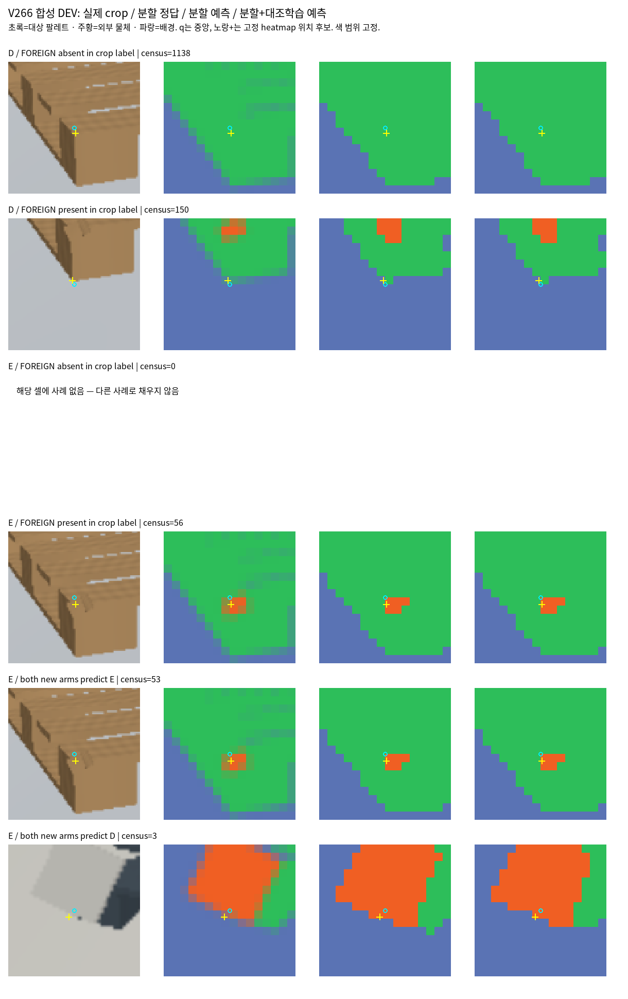

아래는 합성 DEV의 사전 규칙으로 고른 여섯 셀입니다. 같은 사례가 여러 셀에 해당하면 반복하며 빈 셀은 유지합니다. 정답 지도는 저장 renderer owner를 사용합니다. 픽셀·token 분할 정답이 있는 합성과 실사 정성 검토는 구분합니다.

실사 G370: 콘 흰 띠→팔레트, G256: 콘 몸통→팔레트, G908: 콘 받침→팔레트가 공통 문제입니다. G996은 보이는 팔레트 조각과 콘을 구분한 부분이 있어 기존 E 주석의 재검토 사례로 유지합니다. 실제 분할 GT가 없으므로 실사 분할 IoU로 표현하지 않습니다.
G370 · G256 · G908 · G996 · 지역별 확률과 관측 기록